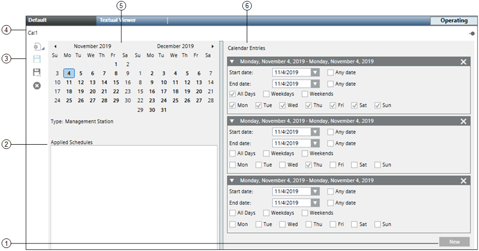

Management Station Calendar Workspace
This section provides an overview of the Management Station Calendar Workspace.
Calendars allow you to override scheduled switch commands. In this sense, you can consider calendars as exception schedules, consisting of dates only.
When you create a calendar, you can choose specific dates (January 15), a date range (August 1 – 31), or a week and a day you want the exception to run (third week of the month, on Wednesday).
All calendars are associated with a schedule.
For example, if you want to reduce energy costs in your building during company holidays, you can create a schedule with a calendar reference exception that commands equipment into holiday mode.
This section provides an overview of the Management Station Calendar Workspace.
Calendars allow you to override scheduled switch commands. In this sense, you can consider calendars as exception schedules, consisting of dates only.
When you create a calendar, you can choose specific dates (January 15), a date range (August 1 – 31), or a week and a day you want the exception to run (third week of the month, on Wednesday).
All calendars are associated with a schedule.
For example, if you want to reduce energy costs in your building during company holidays, you can create a schedule with a calendar reference exception that commands equipment into holiday mode.

| Name | Description |
1 | New Button | Opens a new calendar entry. |
2 | Applied Schedules | Displays a list of schedules referencing the calendar. |
3 | Scheduler Toolbar | Includes the following icons: |
4 | Calendar Name | Displays the name of the calendar. |
5 | Date Picker | Displays a monthly calendar with entry dates highlighted. When first displayed or refreshed, the current day is selected by default. |
6 | Calendar Entries | Displays a list of entries representing start and end dates and recurrence patterns. |